Laboratoio sistemas dinâmicos
Prática 07
Autores: Victor Hugo Daia Lorenzato e Whilker Henrique Santos Silva
Contents
Limpar workspcade
close all;
clear;
clc;
Ex01 A
m = 1; c = 1; k = 1; s = tf('s'); G = 1 / (m*s^2 + c*s + k); disp('Função de Transferência G(s):'); G
Função de Transferência G(s):
G =
1
-----------
s^2 + s + 1
Continuous-time transfer function.
Ex 01 B
s = tf('s');
m = 1;
k = 1;
c = 1;
x_t = 1;
y_t = (x_t/k)/((1+(s^2 * m)/k) + ((c*s)/k));
step(y_t);
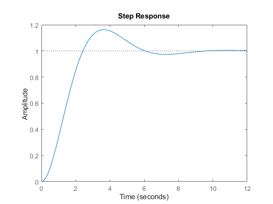
A saída y(t) é a resposta do sistema a um degrau unitário, o termo "1" indica que a resposta final do sistema é 1.
O sistema apresentado é de segunda ordem subamortecido, onde a resposta ao degrau tem uma oscilação amortecida que eventualmente se estabiliza no valor de estado estacionário (1).
Ex 01 C
s = tf('s');
m = 1;
k = 4;
c = 1;
x_t = 1;
y_t = (x_t/k)/((1+(s^2 * m)/k) + ((c*s)/k));
step(y_t);
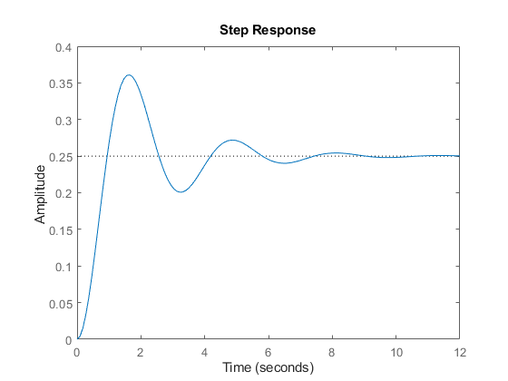
Observa-se uma resposta mais rápida e menos oscilatória, pois o aumento da rigidez (k) tende a aumentar a frequência natural do sistema.
Ex 01 D
s = tf('s');
m = 1;
k = 1;
c = 4;
x_t = 1;
y_t = (x_t/k)/((1+(s^2 * m)/k) + ((c*s)/k));
step(y_t);
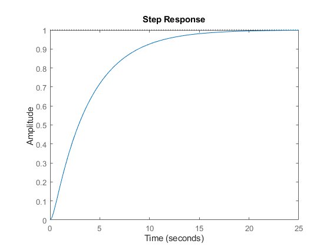
Observa-se uma resposta mais amortecida e sem oscilações, pois o aumento do amortecimento (c) tende a reduzir as oscilações do sistema.
Ex 01 E (Para B)
s = tf('s');
m = 1;
k = 1;
c = 1;
x_t = 1;
y_t = (x_t/k)/((1+(s^2 * m)/k) + ((c*s)/k));
bode(y_t);
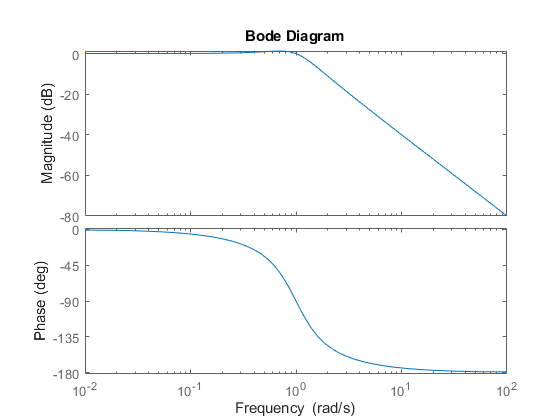
Ex 01 E (Para C)
s = tf('s');
m = 1;
k = 4;
c = 1;
x_t = 1;
y_t = (x_t/k)/((1+(s^2 * m)/k) + ((c*s)/k));
bode(y_t);
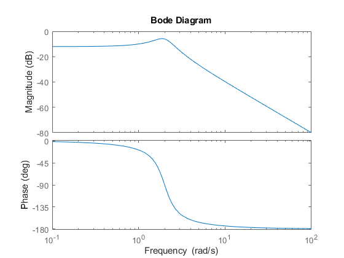
Ex 01 E (Para D)
s = tf('s');
m = 1;
k = 1;
c = 4;
x_t = 1;
y_t = (x_t/k)/((1+(s^2 * m)/k) + ((c*s)/k));
bode(y_t);
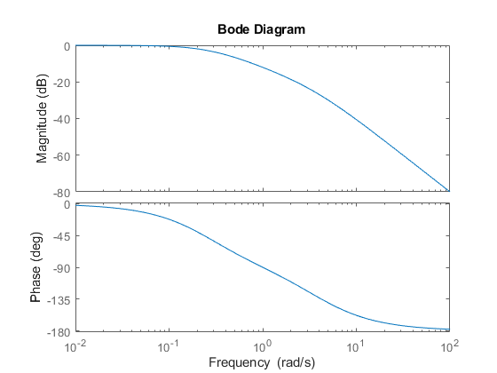
Para B, observa-se que se trata de um sistema com amortecimento crítico. O gráfico de Bode apresenta uma resposta com um pico moderado de ressonância, com uma queda de amplitude suave em altas frequências. Para C, observa-se um aumento na constante da mola k, aumentando a rigidez do sistema. Sua frequência natural será mais alta. O gráfico de Bode terá baixas amplitudes e a fase cairá de 0 graus para -180 graus. Para D, observa-se que o amortecimento c é aumentado, tornando o sistema subamortecido. O gráfico de Bode terá uma transição mais suave na amplitude com o aumento da frequência.
Comparação:
- Aumentar o valor de c resulta em um sistema mais amortecido, reduzindo os picos de ressonância e
suavizando a resposta de frequência.
- Aumentar k desloca a frequência natural do sistema para valores mais altos, resultando em um pico de
ressonância em frequências mais altas.
Essas variações são refletidas no gráfico de Bode, onde podemos observar como os parâmetros afetam a magnitude e a fase da resposta em frequência dos sistemas massa-mola-amortecedor.
Ex 01 F
m = 1; k = 1; c = 1; A =[0 1 ; -k/m -c/m]; B =[0 ; 1/m]; C =[1 0 ; 0 1 ; -k/m -c/m]; D =[0 ; 0 ; 1/m]; SYS = ss(A,B,C,D);
Ex 01 G
m = 1; k = 1; c = 1; A = [0 1; -k/m -c/m]; B = [0; 1/m]; C = [1 0; 0 1; -k/m -c/m]; D = [0; 0; 1/m]; SYS = ss(A,B,C,D); t = 0:0.1:10; u_step = ones(size(t)); [y_step, t_step, x_step] = lsim(SYS, u_step, t); figure; subplot(3,1,1); plot(t_step, y_step); title('Resposta ao Degrau Unitário'); xlabel('Tempo (s)'); ylabel('Saídas'); u_impulse = [1 zeros(1, length(t)-1)]; [y_impulse, t_impulse, x_impulse] = lsim(SYS, u_impulse, t); subplot(3,1,2); plot(t_impulse, y_impulse); title('Resposta ao Impulso'); xlabel('Tempo (s)'); ylabel('Saídas'); u_sine = sin(2*pi*0.5*t); [y_sine, t_sine, x_sine] = lsim(SYS, u_sine, t); subplot(3,1,3); plot(t_sine, y_sine); title('Resposta ao Sinal Senoidal (0.5 Hz)'); xlabel('Tempo (s)'); ylabel('Saídas'); figure; subplot(2,1,1); plot(t, x_step); title('Variáveis de Estado - Resposta ao Degrau'); xlabel('Tempo (s)'); ylabel('Estados'); subplot(2,1,2); plot(t, x_sine); title('Variáveis de Estado - Resposta ao Sinal Senoidal'); xlabel('Tempo (s)'); ylabel('Estados');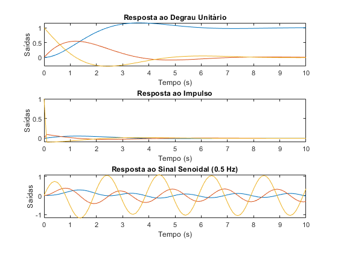 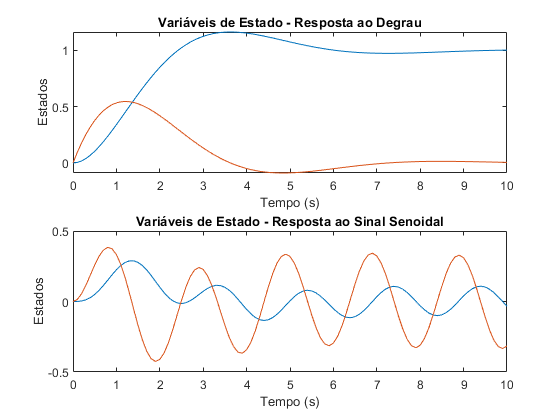
Ex 02 A
s = tf('s'); m = 1; c = 1; k = 1; G = 1 / (m * s^2 + c * s + k); disp('Função de Transferência G(s):'); G
Função de Transferência G(s):
G =
1
-----------
s^2 + s + 1
Continuous-time transfer function.
Ex 02 B
s = tf('s');
m1 = 1;
m2 = 2;
k1 = 1000;
k2 = 20;
k3 = 20;
b = 12;
ut = 1;
G1 = (m2*s^2+b*s+k2+k3)/((m1*s^2+b*s+k1+k2)*(m2*s^2+b*s+k2+k3)-(b*s+k2)^2);
G2 = (b*s + k2)/((m1*s^2+b*s+k1+k2)*(m2*s^2+b*s+k2+k3)-(b*s+k2)^2);
subplot(2,1,1);
step(G1);
subplot(2,1,2);
step(G2);
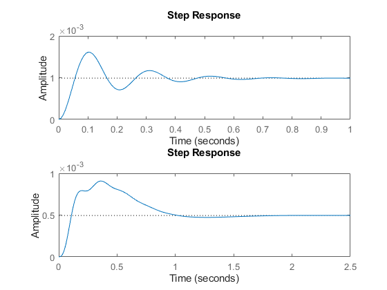
- Posição (x1(t), x2(t)): Ambas as massas se moverão a partir da posição inicial até uma nova posição de equilíbrio devido à força aplicada de 1N.
- Velocidade: Inicialmente, a velocidade é zero, aumentará com a aplicação da força, e eventualmente se estabilizará à medida que a posição de equilíbrio é atingida.
- Aceleração: A aceleração será máxima no momento inicial da aplicação da força e diminuirá com o tempo à medida que as massas se aproximam da posição de equilíbrio.
Ex 02 C
m1 = 1; m2 = 2; k1 = 1000; k2 = 20; k3 = 20; b = 12; A =[0 1 0 0 ; -(k1+k2)/m1 -b/m1 k2/m1 b/m1 ; 0 0 0 1 ; k2/m2 b/m2 -(k2+k3)/m2 -b/m2]; B =[0 ; 1/m1 ; 0 ; 0]; C =[1 0 0 0 ; 0 1 0 0 ; -(k1+k2)/m1 -b/m1 k2/m1 b/m1 ; 0 0 1 0 ; 0 0 0 1 ; k2/m1 b/m2 -(k2+k3)/m2 -b/m2]; D =[0 ; 0 ; 1/m1 ; 0 ; 0 ; 0]; SYS = ss(A,B,C,D);
kmklvcxz
Ex 02 D
m1 = 1;
m2 = 2;
k1 = 100;
k2 = 20;
k3 = 20;
b = 12;
A = [0 1 0 0;
-(k1+k2)/m1 -b/m1 k2/m1 b/m1;
0 0 0 1;
k2/m2 b/m2 -(k2+k3)/m2 -b/m2];
B = [0; 1/m1; 0; 0];
C = [1 0 0 0;
0 1 0 0;
-(k1+k2)/m1 -b/m1 k2/m1 b/m1;
0 0 1 0;
0 0 0 1;
k2/m2 b/m2 -(k2+k3)/m2 -b/m2];
D = [0; 0; 1/m1; 0; 0; 0];
SYS = ss(A,B,C,D);
t = 0:0.1:10;
u_step = ones(size(t));
[y_step, t_step, x_step] = lsim(SYS, u_step, t);
figure;
subplot(3,1,1);
plot(t_step, y_step);
title('Resposta ao Degrau Unitário');
xlabel('Tempo (s)');
ylabel('Saídas');
u_impulse = [1 zeros(1, length(t)-1)];
[y_impulse, t_impulse, x_impulse] = lsim(SYS, u_impulse, t);
subplot(3,1,2);
plot(t_impulse, y_impulse);
title('Resposta ao Impulso');
xlabel('Tempo (s)');
ylabel('Saídas');
u_sine = sin(2*pi*0.5*t);
[y_sine, t_sine, x_sine] = lsim(SYS, u_sine, t);
subplot(3,1,3);
plot(t_sine, y_sine);
title('Resposta ao Sinal Senoidal (0.5 Hz)');
xlabel('Tempo (s)');
ylabel('Saídas');
figure;
subplot(2,1,1);
plot(t, x_step);
title('Variáveis de Estado - Resposta ao Degrau');
xlabel('Tempo (s)');
ylabel('Estados');
subplot(2,1,2);
plot(t, x_sine);
title('Variáveis de Estado - Resposta ao Sinal Senoidal');
xlabel('Tempo (s)');
ylabel('Estados');
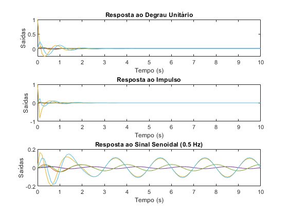 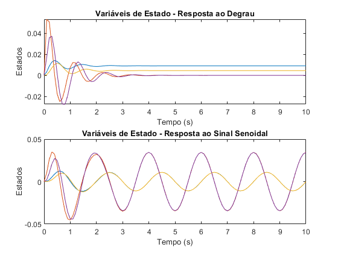